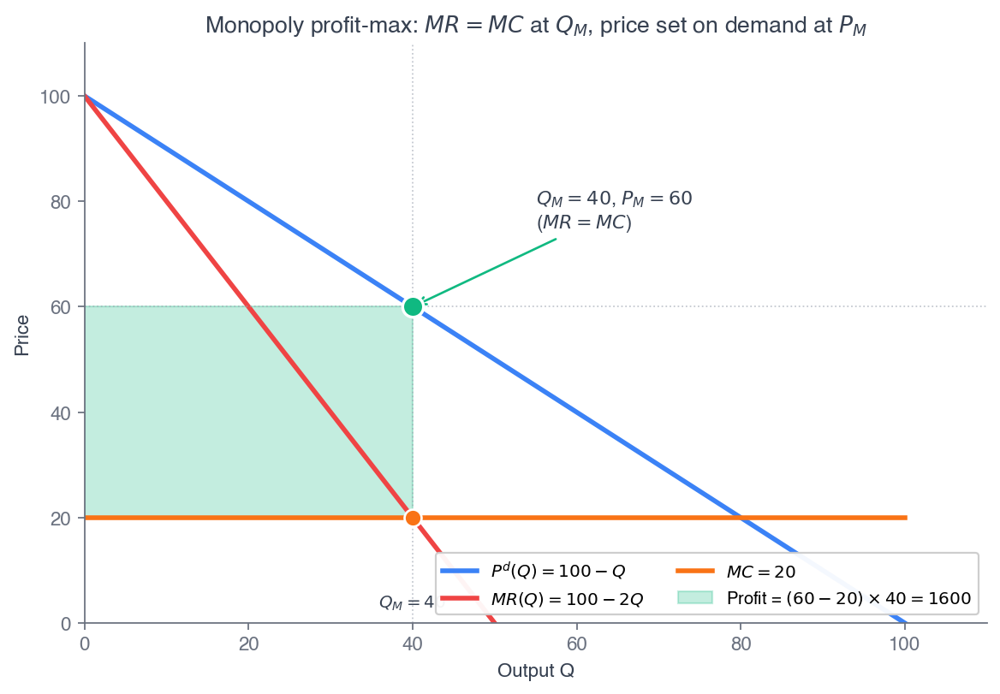

ECON 2316 • Microeconomic Theory • Chapter 11
Monopoly
When Spotify raised Premium from \$10.99 to \$11.99, how much of that extra dollar did it keep? This chapter answers with a single equation — \(MR = MC\) — and turns it into a number you can read off any price tag.
Dr. Richeng Piao
Department of Economics
Northeastern University — 100 min

Learning Objectives
By the end of class today, you will be able to…
11.1
Derive marginal revenue from inverse demand and explain why \(MR < P\) for any price-maker. (Bloom L3)
11.2
Solve the monopolist's price and quantity from \(MR = MC\) end-to-end on a linear-demand example. (Bloom L3)
11.3
Compute the Lerner index and connect markup to elasticity: \((P-MC)/P = -1/\varepsilon_D\). (Bloom L4 — central result)
11.4
Quantify the deadweight loss of monopoly as the Harberger triangle \(\tfrac12(P_M-MC)(Q_C-Q_M)\). (Bloom L4)
11.5
Analyze natural monopoly (subadditive cost) and evaluate price-cap and average-cost regulation. (Bloom L5)
From Price-Taker to Price-Maker
Ch 10 — perfect competition
- Firm is a price-taker: \(\partial p/\partial q_i = 0\)
- \(MR = p\), so profit-max sets \(p = MC\)
- Free entry → \(p = \min ATC\), \(\pi = 0\)
- Welfare theorem holds: \(Q^*\) maximizes total surplus
Ch 11 — monopoly
- Firm is a price-maker: \(\partial p/\partial q < 0\)
- \(MR < p\), so profit-max sets \(MR = MC\)
- Price sits above \(MC\) — the markup
- Welfare theorem fails: \(Q_M < Q_C\), deadweight loss returns
One assumption changes everything. A monopolist faces the entire market demand curve, so selling one more unit forces the price down on every unit it sells. That single fact — \(\partial p/\partial q < 0\) — generates marginal revenue below price, a positive markup, and the deadweight loss the §10.9 price floor previewed — only now the firm chooses it.
Why Does Spotify Charge \$11.99?
June 3, 2024: Spotify raises US Premium Individual from \$10.99 to \$11.99 — its first big US hike since 2018. By the end of 2025 it had 290M Premium subscribers and a 34.8% Premium gross margin. In early 2026 it raised the price again, to \$12.99.
Spotify is not a price-taker. Apple Music has ~⅓ its subscribers; Amazon, YouTube Music, Tidal are smaller still. When Spotify raises its price, the price of Spotify Premium rises — some subscribers churn, most stay.
The committee's question wasn't which direction — you already know that. It was how much: does the extra revenue from retained dollars beat the revenue lost to churn? The answer is a single equation: \(MR = MC\).
\$11.99
US Premium Individual (2024 hike)
290M
Premium subscribers, Q4 2025
\$8.40
Royalty-share \(MC\) = 0.70 × \(P\)
−3.33
Implied demand elasticity \(\varepsilon_D\)
These four numbers — \((P, N, MC, \varepsilon_D) = (\$11.99,\ 290\text{M},\ \$8.40,\ -3.33)\) — are locked for the rest of Part IV. Chapters 12, 13, and 14 inherit them verbatim.
§11.2
Market Power
A downward-sloping demand curve for the firm: \(\partial p/\partial q < 0\)
Market Power, Made Formal
Chapter 9's gigafactory faced a flat residual demand: it could sell 50 GWh or 100 at the going \$84/kWh. A monopolist cannot. Spotify is the only seller of Spotify Premium, so it faces the entire market demand curve:
\(\displaystyle \text{market power} \iff P'(q) < 0\)
A one-unit increase in output lowers the price the firm can charge on all its units. Selling more requires charging less; charging more means selling less. The two choices are duals — pick \(q\), read \(P\) off demand.
What market power lets the firm do: charge above marginal cost. A price-taker who set \(p > MC\) would lose every sale to a rival at \(p = MC\). A monopolist, with no rival to undercut it, sustains the wedge:
markup \(= P - MC > 0\)
That wedge is what the welfare theorem cares about. Ch 10's equilibrium was efficient because \(p = MC\). Any wedge between consumer benefit and producer cost generates deadweight loss — the rest of Part IV.
A subtle point: Spotify is not literally the only music platform. But it is large and differentiated enough that its residual demand — what's left after consumers choose between it and substitutes — still slopes down. The "monopoly" treatment is an approximation; Chapter 13 refines it with explicit rivals.
The Same Picture You Saw in Principles
Recall from Principles — 1116 §11.2
"How a Monopolist Sets Price" told it graphically: the airline that owned the only nonstop route from a midsize city to a vacation spot. It sold \(Q = 50\) seats where \(MR = MC = \$56\), charged \(P = \$200\) off the demand curve, and with \(ATC = \$96\) earned profit \((200-96)\times 50 = \$5{,}200\).
The key idea then: selling one more seat forces the price down on every seat, so \(MR < P\). Chapter 11 makes that derivation calculus-explicit.
All of Part IV lives on a single dimension — how much market power a firm has:
Ch 10
\(\partial p/\partial q_i = 0\)
Ch 13
Ch 13–14
Ch 11
\(\partial p/\partial q > 0\)
The monopolist sits at one extreme, the price-taker at the other. Every other structure is some point on the line.
§11.3
Marginal Revenue Below Price
\(MR(q) = P(q) + q\,P'(q) = P\left(1 + \dfrac{1}{\varepsilon_D}\right)\)
Why Is the 51st Unit Worth Less to a Monopolist?
A price-taker's 51st unit adds exactly the price: the price doesn't move, so \(MR = p\). That was Ch 9.
A monopolist's 51st unit adds the price minus the price cut needed to sell it — and that cut applies to every unit already being sold:
\(MR = \underbrace{P(q)}_{\text{quantity effect}} + \underbrace{q\,P'(q)}_{\text{price effect } < 0}\)
The first term is the revenue from the new sale at the new price. The second is the revenue lost on the \(q\) units the firm now sells for less. Since \(P'(q) < 0\), the sum is strictly below \(P\): the \(MR\) curve lies under demand at every \(q > 0\).

Fig 11.2 — \(MR\) lies strictly below demand for \(q > 0\).
Calculus Corner 11.1 — MR and the Inverse-Elasticity Rule
Total revenue is \(TR(q) = P(q)\cdot q\). Differentiate with the product rule:
\[ MR(q) = P(q) + q\,P'(q) \]
Factor out the price to expose the elasticity:
\[ MR = P\left(1 + \frac{1}{\varepsilon_D}\right) \]
where \(\varepsilon_D = \dfrac{dQ}{dP}\cdot\dfrac{P}{Q} < 0\) for downward-sloping demand.
Two limiting cases tie it together:
\(|\varepsilon_D| \to \infty\) (perfectly elastic = price-taker): \(1/\varepsilon_D \to 0\), so \(MR \to P\). Exactly Ch 9.
\(|\varepsilon_D| = 1\) (unit-elastic): \(MR = 0\). Total revenue is at its peak — one more unit adds nothing.
\(|\varepsilon_D| < 1\) (inelastic): \(MR < 0\). Revenue is falling as the firm sells more.
Linear Demand: Same Intercept, Twice the Slope
For linear demand \(P(q) = a - bq\), we have \(P'(q) = -b\), so:
\(MR(q) = a - bq + q(-b) = a - 2bq\)
Commit this to memory: linear \(MR\) has the same vertical intercept \(a\) and twice the slope of demand. It crosses the horizontal axis at \(q = a/(2b)\) — exactly half the demand intercept \(q = a/b\).
Heads Up 11.1
\(MR = P\) only at \(q = 0\). A common trap is to set \(MR = P\) at the optimum, as if the firm were a price-taker. For linear demand, \(MR = P\) requires \(a - 2bq = a - bq\), i.e. \(q = 0\). The curves cross only at the vertical intercept; at every positive \(q\), \(MR\) lies strictly below \(P\). If your FOC has \(MR = P\), recompute.
Two Sign-Convention Traps
Heads Up 11.2 — signed vs absolute elasticity
Demand elasticity \(\varepsilon_D < 0\), so \(-1/\varepsilon_D > 0\). Some books write \(L = 1/|\varepsilon_D|\); this book uses signed \(\varepsilon_D\) and writes \(L = -1/\varepsilon_D\). They are arithmetically identical.
When you see \(\varepsilon_D = -2\), the predicted markup is \(-1/(-2) = 0.5 = 50\%\).
Heads Up 11.3 — never operate where demand is inelastic
If \(|\varepsilon_D| < 1\) at some \(q\), then \(MR(q) < 0\) — every extra unit reduces total revenue. A profit-maximizer would cut \(q\): that raises revenue and lowers cost.
The optimum always lies in the elastic region, \(|\varepsilon_D| > 1\). If your candidate has \(|\varepsilon_D| \le 1\), recompute.
Both traps come from the same place: \(\varepsilon_D\) is negative, and the interesting boundary is \(|\varepsilon_D| = 1\), where \(MR = 0\) and total revenue peaks. To the elastic side, the firm still gains from selling more; to the inelastic side, it loses.
§11.4
The Profit-Max FOC
\(\dfrac{d\pi}{dq} = MR(q) - MC(q) = 0 \iff MR = MC\)
Produce Until Marginal Revenue Meets Marginal Cost
Profit is revenue minus cost. Differentiate and set to zero:
\(\pi(q) = P(q)q - C(q) \;\Rightarrow\; MR(q) = MC(q)\)
Identical logic to Ch 9's \(p = MC\) — produce until the next unit's revenue contribution equals its cost — but with \(MR\) replacing \(p\) because the firm is no longer a price-taker.
The recipe: (1) read \(MC\) off the cost function; (2) read \(MR\) off inverse demand; (3) set \(MR = MC\), solve for \(Q_M\); (4) read \(P_M = P(Q_M)\) off the demand curve.

Fig 11.3 — \(MR = MC\) sets \(Q_M\); read \(P_M\) up to demand.
Drag the Quantity: Find Where \(MR = MC\)
Demand \(P = 100 - Q\); \(MR = 100 - 2Q\); \(MC = 20\). Drag \(Q\): the green profit rectangle is \((P-MC)\,Q\); it is largest at \(Q_M = 40\), where \(MR = MC\). Push \(Q\) toward the competitive \(Q_C = 80\) and the red deadweight-loss triangle shrinks to zero.
Walkthrough 11.1 — Linear-Demand Monopoly End-to-End
Problem. A monopolist faces \(P(Q) = 100 - Q\) and constant \(MC = 20\). Find \(Q_M\), \(P_M\), profit, and the deadweight loss vs the competitive benchmark.
Set up & solve
\(TR = (100-Q)Q\), so \(MR = 100 - 2Q\). FOC \(MR = MC\): \(100 - 2Q = 20 \Rightarrow Q_M = 40\).
Price: \(P_M = 100 - 40 = \$60\). Profit: \((P_M - MC)Q_M = (60-20)(40) = \$1{,}600\).
Competitive benchmark \(P = MC\): \(100 - Q = 20 \Rightarrow Q_C = 80\), \(P_C = \$20\).
Deadweight loss & checks
\(DWL = \tfrac12(P_M - MC)(Q_C - Q_M) = \tfrac12(40)(40) = \$800\) — the triangle over the un-traded units.
Check elasticity: \(\varepsilon_D = (-1)(60/40) = -1.5\), so \(|\varepsilon_D| = 1.5 > 1\) ✓. Markup \(L = 40/60 = 0.667 = -1/\varepsilon_D\) ✓.
Takeaway. For linear demand and constant \(MC\), the monopolist produces exactly half the competitive quantity (\(40\) vs \(80\)). The price wedge generates \$800 of deadweight loss — value that simply disappears.
§11.5 — the central tool
The Lerner Index
Markup as inverse elasticity: \(\dfrac{P - MC}{P} = -\dfrac{1}{\varepsilon_D}\)
Read Demand Elasticity Off a Price Tag
Define the markup as a fraction of price — the Lerner index \(L = (P-MC)/P\). Substitute the FOC \(MR = MC\) and the inverse-elasticity form:
\(P\!\left(1 + \tfrac{1}{\varepsilon_D}\right) = MC \;\Rightarrow\; \dfrac{P-MC}{P} = -\dfrac{1}{\varepsilon_D}\)
The profit-maximizing markup is exactly the negative inverse of demand elasticity. It's local — it holds at the operating point — but there it's exact for any smooth demand, not just linear.
\(\varepsilon_D = -2 \Rightarrow L = 0.5\) (price 50% over \(MC\)). \(\varepsilon_D = -10\) (nearly a price-taker) \(\Rightarrow L = 0.1\). More elastic demand → smaller markup.

Fig 11.5 — markup \(L = -1/\varepsilon_D\); Spotify and Wegovy bracket the range.
Walkthrough 11.2 — Spotify Premium's Lerner Index
Problem. US Premium Individual lists at \(P = \$11.99\). Spotify pays ~70% of revenue to artists/labels; treat the per-subscriber royalty as \(MC\). Find \(L\), the implied \(\varepsilon_D\), and compare to academic estimates.
Set up & solve
\(MC = 0.70 \times 11.99 = \$8.39 \approx \$8.40\).
\(L = \dfrac{11.99 - 8.40}{11.99} = \dfrac{3.59}{11.99} = 0.300\).
Implied elasticity: \(\varepsilon_D = -1/L = -1/0.300 = -3.33\).
Compare & check
Published estimates for paid-streaming demand cluster in \(\varepsilon_D \in [-2.0, -1.4]\). At \(\varepsilon = -1.7\), the predicted markup is \(L = 0.588\) — far above Spotify's observed \(0.300\).
Check: \(|\!-\!3.33| > 1\) ✓ (elastic). The wedge is diagnostic, not a refutation — Heads Up 11.4 explains why.
Takeaway. Spotify's 30% markup implies demand elasticity \(-3.33\) — more elastic than published estimates. Either the firm isn't at the static profit-max FOC, or the simple model is missing something. The gap tells you where to look.
Heads Up 11.4 — Observed Markups May Diverge from \(-1/\varepsilon_D\)
\(L = -1/\varepsilon_D\) is what theory predicts if the firm sits at the static profit-max FOC. Real firms often don't, for at least five reasons:
1. List \(\ne\) effective price. Spotify's ARPU is ~€4.70 — far below the \$11.99 list — because the base spans Family, Duo, Student, and cheap emerging-market plans. Compute \(L\) at ARPU and \(\varepsilon_D \approx -2.87\).
2. Free-tier substitution. Spotify's ad-supported free tier is an unusually cheap substitute. A churned subscriber often drops to Free, not to Apple Music — raising effective elasticity.
3. Competition from substitutes. Apple, Amazon, YouTube Music, Tidal, podcasts, and radio all bound the price. The "monopoly" framing is a residual-demand approximation — Ch 13 puts the rivals back in.
4. Dynamic pricing. Spotify trades static profit for user-base growth and lock-in. A firm pricing below its static optimum to grow looks like a low-Lerner outlier even if long-run profit is higher.
5. Strategic preemption. A high price invites entry; Spotify's committee forecasts competitor responses we don't see. Bottom line: the Lerner equation tells you what should hold under the simplifying assumptions — deviations are diagnostic, not refutations.
Walkthrough 11.3 — Wegovy at the Ceiling of Monopoly Power
Problem. Novo Nordisk's Wegovy lists at \(P = \$1{,}349.02\)/month. A 2024 JAMA Network Open study put sustainable cost at \$0.89–\$72.49/month; take \(MC = \$5\). Find \(L\), implied \(\varepsilon_D\), and interpret.
Set up & solve
\(L = \dfrac{1349.02 - 5}{1349.02} = \dfrac{1344.02}{1349.02} = 0.9963\).
Implied elasticity: \(\varepsilon_D = -1/0.9963 = -1.004\). Just barely in the elastic region.
Interpret & postscript
A patented drug with no close substitute sits at the ceiling: price is almost entirely markup, and \(\varepsilon_D \approx -1\) confirms demand is just elastic enough for profit-max to make sense.
Feb 2026: Novo announced a cut to \$675/month (Jan 2027), preempting Medicare negotiation. New \(L = 670/675 = 0.9926\), \(\varepsilon_D = -1.007\) — still at the unit-elastic boundary.
Takeaway. Spotify (\(L=0.30\)) and Wegovy (\(L=0.996\)) bracket the realistic range. The implied elasticity near \(-1\) is exactly where the static monopoly model predicts a no-substitutes patent monopoly will sit.
Poll #1 — Two Firms, Same \(MC\). Who Charges More?
Firm A faces demand elasticity \(\varepsilon_D = -1.5\); Firm B faces \(\varepsilon_D = -4\). Both have the same constant \(MC\). Which firm sets the higher markup over marginal cost?
60 sec to vote
Answer: A — the less elastic firm charges more
The Lerner index depends only on elasticity: \(L = -1/\varepsilon_D\). Less elastic demand → bigger markup.
\( L_A = -\tfrac{1}{-1.5} = 0.667 \quad > \quad L_B = -\tfrac{1}{-4} = 0.25 \)
Trap C: equal \(MC\) does not mean equal markup — markup is set by elasticity, not cost. This is exactly why patented Wegovy (\(\varepsilon \approx -1\)) marks up 99% while Spotify (\(\varepsilon \approx -3.3\)) marks up only 30%.
Application — Netflix's Ad-Tier Hike, Revisited from Chapter 1
Chapter 1's Walkthrough 1.4 framed Netflix's Jan 2025 ad-tier hike (\$6.99 → \$7.99) as "compare the marginal revenue from the price increase to the marginal loss from churn." Ch 11 closes the loop — that was the \(MR = MC\) FOC, stated informally.
With 80M ad-tier subs, a \$1 hike, and +2 pp churn: net \(\Delta\) revenue \(= 80\text{M}\times 98\%\times\$12 - 80\text{M}\times 2\%\times\$84 = \$806\text{M} - \$134\text{M} = +\$672\text{M}\).
The hike's marginal-revenue contribution was positive — the firm was not yet at its profit-max price. That Netflix keeps raising prices and keeps adding subscribers is its revealed-preference statement that \(MR = MC\) is still slack on the upside.
+\$672M
Net revenue from the 2025 hike
~94M
Ad-tier MAU by Q1 2026
\$8.99
Mar 2026 ad-tier price (next hike)
9.5 pp
Churn-per-\$ that would zero the gain
Theory and Data 11.1 — The Rise of US Aggregate Markups
De Loecker–Eeckhout–Unger (2020, QJE)
Average markup of price over \(MC\) across US public firms rose from ~\$1.21 (1980) to ~\$1.61 (2016). In Lerner terms (\(L = (\text{markup}-1)/\text{markup}\)), the aggregate index roughly doubled, ~0.17 → ~0.38, over 36 years.
Concentrated in services, information, retail, and finance — the "superstar firm" story. Manufacturing rose only modestly.
But the measurement is contested:
- Bond et al. (2021): revenue-based \(MC\) estimates can be unidentified without quantity data — the trend may reflect input changes, not market power.
- Raval (2023): markups from labor inputs vs materials inputs frequently disagree by large margins.
Two facts survive: markups vary enormously across industries (near 0 in agriculture to \(>0.85\) in patented pharma), and the distribution has spread out over time.
Walkthrough 11.4 — Inverse-Elasticity Rule Across Three Firms
Problem. Three firms with \(\varepsilon_D = -1.5,\ -2,\ -3\), all with constant \(MC = 10\). Find each profit-max markup and price. Use \(P = MC/(1 + 1/\varepsilon_D)\).
Solve each firm
| \(\varepsilon_D\) | \(L = -1/\varepsilon_D\) | \(P = MC/(1-L)\) |
|---|---|---|
| \(-1.5\) | \(0.667\) | \(10/(1/3) = \$30\) |
| \(-2\) | \(0.500\) | \(10/0.5 = \$20\) |
| \(-3\) | \(0.333\) | \(10/(2/3) = \$15\) |
Check the direction
More elastic demand → smaller markup → lower price. Firm 1 (least elastic, \(-1.5\)) has the highest markup (66.7%) and price (\$30); Firm 3 (most elastic, \(-3\)) the lowest (33.3%, \$15). ✓
All three have \(MC = 10\) — identical costs, very different prices. Cost doesn't set the markup; elasticity does.
Takeaway. The Lerner index is a direct measurement of elasticity for a profit-maximizing firm: observe the markup, infer the elasticity. That's why it's the central tool in industrial organization — it converts price-cost margins into elasticities that are otherwise hard to observe.
§11.6
Deadweight Loss from Monopoly
\(DWL_M = \displaystyle\int_{Q_M}^{Q_C}\!\big[P^d(q) - MC(q)\big]\,dq\)
The Units That Never Trade
Ch 10 proved the competitive \(Q_C\) maximizes total surplus. A monopolist sets \(MR = MC\) instead of \(P = MC\), producing \(Q_M < Q_C\). The units between \(Q_M\) and \(Q_C\) would have traded competitively — their value to consumers exceeds their cost — but don't. That lost surplus is the deadweight loss.
Recall from Principles — 1116 §11.3
"The Welfare Cost of Monopoly" drew this as the triangle between demand and \(MC\), bounded by \(Q_M\) on the left and \(Q_C\) on the right. In Principles you measured it as a triangle; here we measure it as an integral — which generalizes to non-linear demand and rising \(MC\).

Fig 11.4 — the Harberger triangle between \(Q_M\) and \(Q_C\).
Calculus Corner 11.2 — Deadweight Loss as an Integral
The deadweight loss is the un-captured surplus on the un-traded units:
\[ DWL_M = \int_{Q_M}^{Q_C}\!\big[P^d(q) - MC(q)\big]\,dq \]
For \(P^d = a - bq\) and constant \(MC = c\), it reduces to the Harberger triangle:
\[ DWL_M = \tfrac12(P_M - c)(Q_C - Q_M) \]
The integrand \(P^d - MC\) is positive on \([Q_M, Q_C]\) — by definition, demand lies above \(MC\) where the competitive market would still produce. The integral sums those gaps.
We've now seen these surplus integrals four times: Ch 2 introduced them, Ch 3 used them for tax DWL, Ch 10 proved the welfare theorem, and Ch 11 measures the loss from a price-cost wedge.
For convex \(MC\) (rising at an accelerating rate), the triangle underestimates the true integral; the gap closes faster than linearly near \(Q_C\).
Walkthrough 11.5 — DWL with Rising \(MC\): Integral vs Triangle
Problem. \(P^d(Q) = 100 - Q\), \(MC(q) = 20 + 0.1q\). Find \(Q_M\), \(P_M\), \(Q_C\); compute DWL exactly by integration and compare to the triangle.
Set up & solve
\(MR = 100 - 2Q\). FOC: \(100 - 2Q = 20 + 0.1Q \Rightarrow Q_M = 80/2.1 = 38.10\), \(P_M = \$61.90\).
Competitive: \(100 - Q = 20 + 0.1Q \Rightarrow Q_C = 80/1.1 = 72.73\), \(P_C = \$27.27\).
Exact: \(DWL = \int_{38.10}^{72.73}[80 - 1.1q]\,dq = \$659.48\).
Triangle & comparison
Base \(= 72.73 - 38.10 = 34.63\). Height \(= P_M - MC(Q_M) = 61.90 - 23.81 = 38.09\). Triangle \(= \tfrac12(34.63)(38.09) = \$659.48\).
Exact \(= \$659.48\); triangle \(= \$659.48\). They agree — because \(MC\) is linear, so the integrand is linear and its area is exactly a triangle.
Takeaway. The Harberger triangle is exact whenever demand and \(MC\) are both linear. If \(MC\) rises convexly, the triangle underestimates; concavely, it overestimates. The integral is always the exact computation.
Theory and Data 11.2 — How Big Is the Welfare Cost of US Monopoly?
0.1%
Harberger (1954): DWL as share of GNP
5–10%
Edmond–Midrigan–Xu (2023): of consumption
Harberger used triangle methods on cross-sectional industry data and found monopoly was a nuisance, not a macro distortion. Modern GE models with heterogeneous firms find a welfare cost 50–100× larger.
Where does the gap come from? Two channels the triangle misses:
Misallocation: high-markup firms attract more capital and labor than the social optimum — resources end up in the wrong sectors.
Output-tax channel: a uniform markup acts like an economy-wide output tax, depressing aggregate consumption–leisure choice.
Both operate on the intensive and extensive margins — invisible to a partial-equilibrium triangle.
§11.7
Natural Monopoly
When the cost function itself forces one firm: \(c(Q) \le \sum_i c(q_i)\)
When the Math of Cost Forces One Firm
So far the firm had some market power without saying why. A monopoly can arise from a patent, from strategic exclusion, or because the technology of production itself makes one firm cheaper. The third case — natural monopoly — is a fact about the cost function, defined by subadditivity:
\(c(Q) \le \displaystyle\sum_{i=1}^n c(q_i)\) for any split \(\textstyle\sum_i q_i = Q\)
One firm producing \(Q\) costs no more than the same \(Q\) split across many firms. The classic recipe: positive fixed cost + constant \(MC\), giving \(ATC = F/q + \mu\), which falls forever.
Heads Up 11.5
Natural monopoly is a cost story, not a size story. A small market is a natural monopoly if fixed cost is large relative to demand. "Monopoly" (one firm exists) \(\ne\) "natural monopoly" (one-firm production is cost-minimizing).

Fig 11.6 — declining \(ATC\): one firm always undercuts two.
Calculus Corner 11.3 — Subadditivity and the Failure of \(p = \min ATC\)
For \(c(q) = F + \mu q\), split \(Q\) across \(n\) firms:
\[ \sum_i c(q_i) - c(Q) = nF + \mu Q - (F + \mu Q) = (n-1)F > 0 \]
Subadditive at every \(Q\): splitting pays the fixed cost \(n\) times instead of once.
\[ ATC(q) = \tfrac{F}{q} + \mu, \quad \frac{dATC}{dq} = -\tfrac{F}{q^2} < 0 \]
\(\min ATC\) does not exist on \((0, \infty)\): \(ATC\) declines forever, approaching \(\mu\) only as \(q \to \infty\). There's no finite output where a competitive market can settle.
Chapter 10's free-entry condition \(p = \min LRATC\) fails. The cost function pushes the market toward concentration: one big firm pays \(ATC \to \mu\); many small firms each pay far more. The cost-minimizing structure is one firm — regardless of antitrust law.
Walkthrough 11.6 — Natural-Monopoly Cost Subadditivity
Problem. A firm has \(c(q) = 100 + 5q\). (a) Verify subadditivity at \(Q = 20\). (b) Show \(ATC\) is everywhere declining. (c) Confirm \(p = \min ATC\) has no solution.
Set up & solve
One firm at \(Q=20\): \(c(20) = 100 + 100 = \$200\). Two firms at 10 each: \(2(100+50) = \$300\). \(200 < 300\) ✓ — saving \(= \$100 = F\).
General: \(\sum c(q_i) - c(Q) = (n-1)(100) > 0\) for any \(n > 1\). Subadditive everywhere.
ATC & min check
\(ATC(q) = 100/q + 5\), \(dATC/dq = -100/q^2 < 0\) — strictly declining on \((0,\infty)\).
\(\lim_{q\to\infty} ATC = 5\), never achieved at finite \(q\). So \(p = \min ATC\) has no finite solution — no competitive equilibrium exists.
Takeaway. Positive fixed cost + constant \(MC\) is the textbook recipe for natural monopoly. The competitive \(p = \min ATC\) has no solution; the market necessarily concentrates. Whatever the policy response, it must take this as given — which is §11.8.
§11.8
Regulation Tradeoffs
Three regimes for the natural monopolist: unregulated, \(p = MC\), \(p = ATC\)
Walkthrough 11.7 — Three Regulatory Regimes Compared
Problem. Natural monopoly \(c(q) = 100 + 5q\) (\(F=100\), \(\mu=5\)), demand \(P^d(Q) = 50 - Q\). Compare (i) unregulated, (ii) cap at \(p = MC\), (iii) cap at \(p = ATC\).
| Regime | \(Q\) | \(P\) | \(\pi\) | DWL |
|---|---|---|---|---|
| (i) Unregulated \(MR=MC\) | 22.5 | \$27.5 | \$406 | \$253 |
| (ii) Cap \(p = MC = 5\) | 45 | \$5 | −\$100 | \$0 |
| (iii) Cap \(p = ATC\) | 42.66 | \$7.34 | \$0 | \$2.74 |
(iii) solves \(5 + 100/Q = 50 - Q\), i.e. \(Q^2 - 45Q + 100 = 0\); the consumer-friendly root is \(Q = 42.66\), \(p = \$7.34\).
\(ATC\) pricing eliminates \(250.39/253.13 = \mathbf{98.9\%}\) of the monopoly DWL while keeping the firm self-financing. \(MC\) pricing is first-best (zero DWL) but needs a \$100 subsidy.

Fig 11.7 — the three regulated prices against demand.
Regulation in the Wild — PG&E and the Zero-\(MC\) Platforms
Application — PG&E 2023 General Rate Case
PG&E requested a \$15.4B revenue requirement; the CPUC adopted \$13.5B, with an allowed return on equity ~10%. The arithmetic follows the \(ATC\)-pricing logic of W11.7: estimate operating cost + depreciation + a fair return on the rate base, then set price to recover it.
The Averch–Johnson effect: because allowed profit scales with the capital base, the firm over-invests in capital. That distortion pushed the UK, Australia, and the EU toward price-cap ("RPI − X") regulation.
Application — Microsoft 365 & Adobe
Provisioning one more software license costs ~\$0; nearly all cost is fixed (R&D, sales, support). With \(MC \to 0\), the FOC \(L = -1/\varepsilon_D\) pushes the markup toward 1.
Microsoft 365 E3 rose \$23 → \$26/user/month (July 2026); Adobe moved customers into pricier Creative Cloud Pro. Switching costs (file-format lock-in, learning curves) lower elasticity, so enterprise-SaaS Lerner indices run 0.7–0.9 — closer to Wegovy than to Spotify.
§11.9
Generic-Drug Entry
How fast monopoly power dissolves when entry barriers fall
Walkthrough 11.8 — The Truvada Generic-Entry Collapse (2020)
Problem. Gilead's Truvada (HIV PrEP) listed near \(P_1 = \$1{,}600\)/month under patent, \(MC \approx \$50\). Oct 2020: Teva launched the first generic; within a year the price fell to ~\$50 with multiple makers. Compute pre- and post-entry Lerner indices.
Pre-entry (monopoly)
\(L_1 = (1600 - 50)/1600 = 0.969\). Implied \(\varepsilon_D = -1/0.969 = -1.032\) — just barely elastic, a no-substitutes therapeutic.
Post-entry (competition)
\(L_2 = (50 - 50)/50 = 0\). Multi-source generic competition collapses the markup to ~zero — the market turns Bertrand-competitive (Ch 13).
Welfare: the \$1,550 that flowed to Gilead as monopoly profit becomes consumer surplus, and the DWL units convert into actual consumption.
Takeaway. Patent length is a deliberate static-vs-dynamic tradeoff: longer patents fund more R&D (dynamic gain) but extend the static DWL window (static loss). When the patent expires, the welfare-theorem failure is restored in months.
Heads Up 11.6 — Coase conjecture
A durable-goods monopolist with no commitment may be pushed toward \(p = MC\) anyway: buyers anticipate future price cuts and wait. Hence leasing (Xerox), planned obsolescence, and the shift to subscriptions.
§11.10 — A Note on Augustin Cournot (1801–1877)
In 1838 the French mathematician Antoine Augustin Cournot published Recherches sur les principes mathématiques de la théorie des richesses. In a chapter on monopoly pricing he wrote down — almost word for word — the derivation in Calculus Corner 11.1: take \(R(p) = p\,D(p)\), differentiate to \(dR/dp = D(p) + p\,D'(p)\), set it equal to marginal cost, solve.
It was the first calculus-based model in economics — at a time when economic writing was verbal or geometric. The book was ignored in his lifetime; Walras and Jevons rediscovered him in the 1870s–80s. Abba Lerner (1934) built directly on it, turning the markup into the measurement tool that bears his name.
Cournot also wrote down, in the same 1838 book, the duopoly model that is the foundation of Chapter 13.

Fig 11.8 — the Lerner index across industries, near 0 to \(>0.85\).
Chapter Summary
Market power
A downward-sloping residual demand, \(P'(q) < 0\). Selling more lowers price on all units — the source of \(MR < P\).
Marginal revenue
\(MR = P(1 + 1/\varepsilon_D)\). Linear demand: same intercept, twice the slope. FOC: \(MR = MC\).
Lerner index ★
\(L = (P-MC)/P = -1/\varepsilon_D\). Markup is the inverse of elasticity — the central empirical tool.
Deadweight loss
\(Q_M < Q_C\) makes a Harberger triangle. Aggregate US cost: 5–10% of consumption (EMX 2023).
Natural monopoly
Subadditive cost (\(F + \mu q\)) → declining \(ATC\), no \(\min ATC\). \(ATC\) pricing kills ~99% of DWL.
Spotify ↔ Wegovy
\(L = 0.30\) (\(\varepsilon=-3.33\)) to \(L = 0.996\) (\(\varepsilon=-1.004\)) bracket the realistic range.
Why \$11.99? Because \(MR = MC\), and the markup it implies is \(-1/\varepsilon_D\). The Spotify thread continues: Chapter 12 lets the firm charge different prices to different groups — Student, Duo, Family, Premium.
Coming Up — Chapter 12: Pricing with Market Power
Today the monopolist charged one price to everyone. Chapter 12 relaxes that — and the same firm starts charging different prices to different groups.
Third-degree price discrimination: set \(MR_i = MC\) in each segment \(i\) \(\Rightarrow\) \(L_i = -1/\varepsilon_i\)
- The Lerner index, per segment: charge a higher markup where demand is less elastic — Student vs Family.
- Two-part tariffs: a fixed fee plus a per-unit price — set \(p = MC\), extract surplus through the fee.
- Bundling: when does selling Word + Excel together beat selling them separately?
Before next class: read manuscript §12.1–§12.3. The Spotify Premium portfolio — Student \$5.99, Duo \$16.99, Family \$19.99 — is price discrimination in plain sight.
Questions?
Dr. Richeng Piao · ECON 2316 · Chapter 11